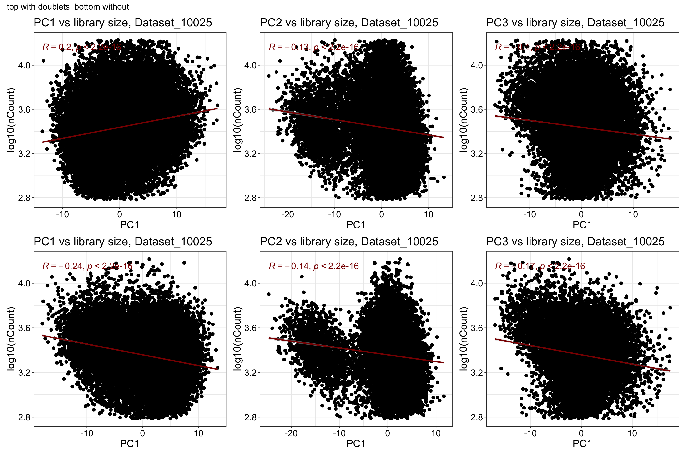
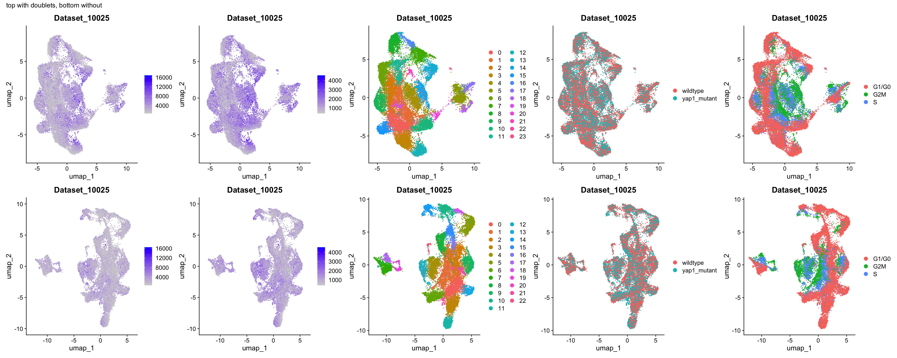
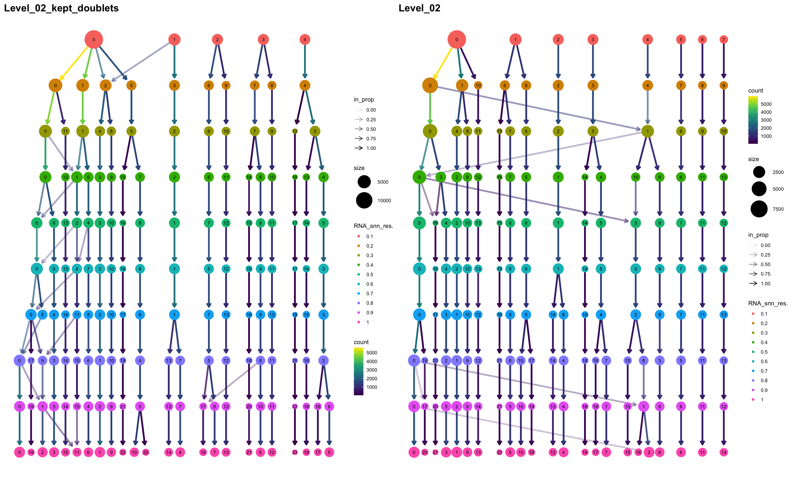
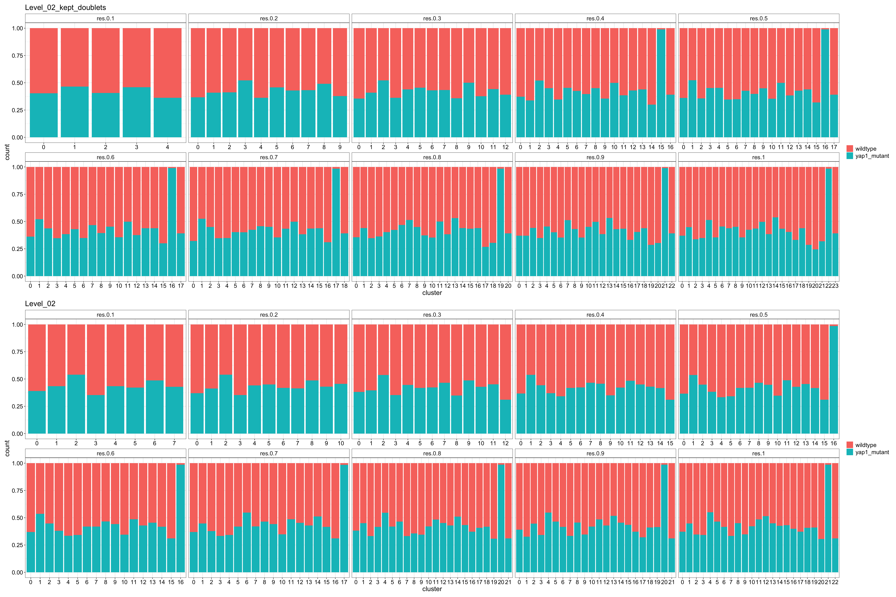
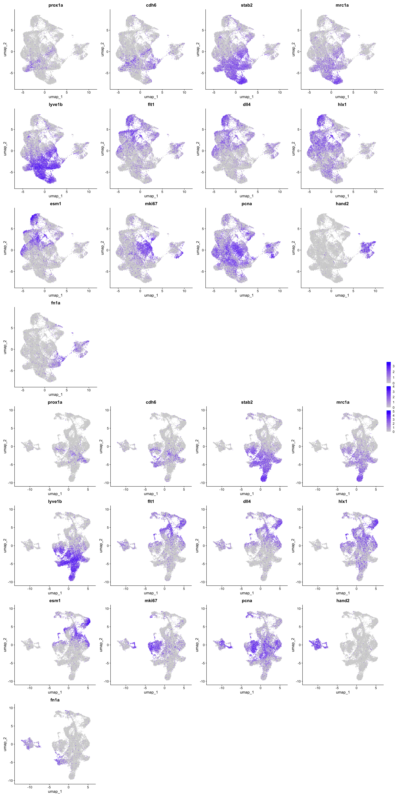
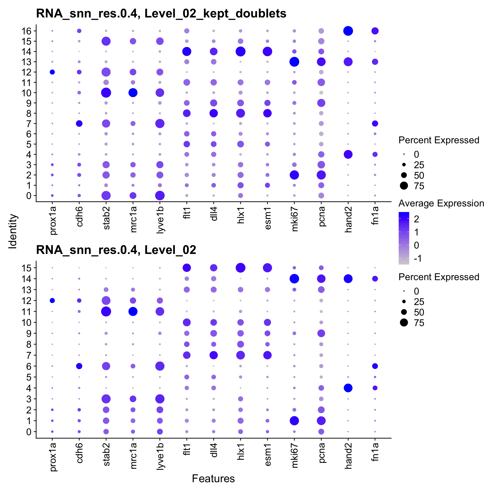
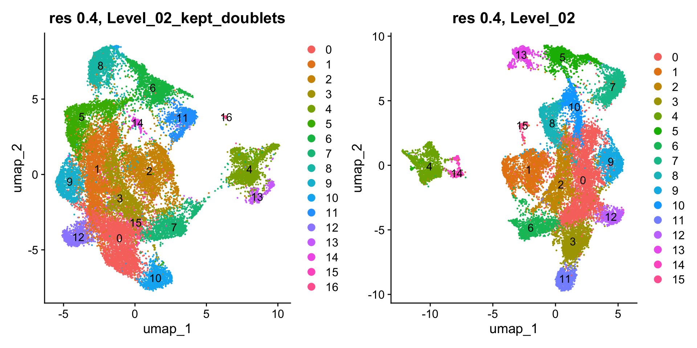

Last updated: 2026-01-26
Checks: 7 0
Knit directory: yap1_meox1_paper/
This reproducible R Markdown analysis was created with workflowr (version 1.7.1). The Checks tab describes the reproducibility checks that were applied when the results were created. The Past versions tab lists the development history.
Great! Since the R Markdown file has been committed to the Git repository, you know the exact version of the code that produced these results.
Great job! The global environment was empty. Objects defined in the global environment can affect the analysis in your R Markdown file in unknown ways. For reproduciblity it’s best to always run the code in an empty environment.
The command set.seed(20260119) was run prior to running
the code in the R Markdown file. Setting a seed ensures that any results
that rely on randomness, e.g. subsampling or permutations, are
reproducible.
Great job! Recording the operating system, R version, and package versions is critical for reproducibility.
Nice! There were no cached chunks for this analysis, so you can be confident that you successfully produced the results during this run.
Great job! Using relative paths to the files within your workflowr project makes it easier to run your code on other machines.
Great! You are using Git for version control. Tracking code development and connecting the code version to the results is critical for reproducibility.
The results in this page were generated with repository version 59591be. See the Past versions tab to see a history of the changes made to the R Markdown and HTML files.
Note that you need to be careful to ensure that all relevant files for
the analysis have been committed to Git prior to generating the results
(you can use wflow_publish or
wflow_git_commit). workflowr only checks the R Markdown
file, but you know if there are other scripts or data files that it
depends on. Below is the status of the Git repository when the results
were generated:
Ignored files:
Ignored: .DS_Store
Ignored: .Rhistory
Ignored: .Rproj.user/
Ignored: analysis/figure/
Ignored: code/.DS_Store
Ignored: code/pre_processing/
Ignored: data/.DS_Store
Ignored: data/genesets/
Ignored: data/input/
Ignored: output/.DS_Store
Ignored: output/analysis/
Ignored: output/data/
Ignored: renv/library/
Ignored: renv/staging/
Untracked files:
Untracked: analysis/pre_processing_combining_wildtypes_dataset_makeObject_Level02_annotation.Rmd
Untracked: code/analysis/
Unstaged changes:
Modified: analysis/index.Rmd
Modified: renv.lock
Note that any generated files, e.g. HTML, png, CSS, etc., are not included in this status report because it is ok for generated content to have uncommitted changes.
These are the previous versions of the repository in which changes were
made to the R Markdown
(analysis/pre_processing_D10025_yap1_dataset_makeObject_Level02_regressCC.Rmd)
and HTML
(docs/pre_processing_D10025_yap1_dataset_makeObject_Level02_regressCC.html)
files. If you’ve configured a remote Git repository (see
?wflow_git_remote), click on the hyperlinks in the table
below to view the files as they were in that past version.
| File | Version | Author | Date | Message |
|---|---|---|---|---|
| Rmd | 59591be | Michelle Meier | 2026-01-26 | wflow_publish("analysis/pre_processing_D10025_yap1_dataset_makeObject_Level02_regressCC.Rmd") |
Making Level 02 object for yap1 dataset. Alternative to ./pre_processing_D10025_yap1_dataset_makeObject_Level02_annotation.Rmd, we’re tying to regress out cell cycle this time.
Load libraries
suppressPackageStartupMessages({
library(tidyverse)
library(here)
library(Seurat)
library(scDblFinder)
library(ggpubr)
library(clustree)
library(patchwork)
library(scater)
library(scran)
library(qs2)
library(scGate)
})Made here: ./pre_processing_D10025_yap1_dataset_makeObject_Level01_annotation.Rmd
input_paths <- c(here('output/data/Datsets/D10025_yap1_dataset/D10025_yap1_dataset_Level_01_kept_doublets_annotated.qs2'),
here('output/data/Datsets/D10025_yap1_dataset/D10025_yap1_dataset_Level_01_annotated.qs2'))
list_objects <- lapply(input_paths, qs_read)
names(list_objects) <- gsub("\\.qs2", "", basename(input_paths))plot_sizing <- theme_bw()+ theme(axis.title = element_text(size = 16),
axis.text = element_text(size = 14, colour = "black"),
plot.title = element_text(size = 18),
legend.text = element_text(size = 14),
legend.title = element_blank())
plot_sizing_seurat <- theme(axis.title = element_text(size = 16),
axis.text = element_text(size = 14, colour = "black"),
plot.title = element_text(size = 18),
legend.text = element_text(size = 14))
rotate_x <- theme(axis.text.x = element_text(angle = 90, vjust = 0.5, hjust=1))
strip_fix <- theme(strip.background = element_rect(fill = "white"),
strip.text = element_text(size = 14))Subset Level 01 to only include endothelial subsets. By going through .pre_processing_D10025_yap1_dataset_makeObject_Level01_annotation.Rmd, we can see that:
there are no low quality clusters that stand out
we can find endothelial subsets using a mix of marker genes and scGate endothelial purity (95%) for clusters
#for each setting separately
#with doublets
cells_to_keep <- list_objects$D10025_yap1_dataset_Level_01_kept_doublets_annotated@meta.data %>%
filter(., RNA_snn_res.0.5_cluster_purity > 0.95) %>%
rownames_to_column("Barcode") %>%
pull(Barcode)
list_objects$D10025_yap1_dataset_Level_02_kept_doublets <- subset(list_objects$D10025_yap1_dataset_Level_01_kept_doublets, cells = cells_to_keep)
#without doublets
cells_to_keep <- list_objects$D10025_yap1_dataset_Level_01_annotated@meta.data %>%
filter(., RNA_snn_res.0.5_cluster_purity > 0.95) %>%
rownames_to_column("Barcode") %>%
pull(Barcode)
list_objects$D10025_yap1_dataset_Level_02 <- subset(list_objects$D10025_yap1_dataset_Level_01_annotated, cells = cells_to_keep)Clean up list, remove Level 01
list_objects$D10025_yap1_dataset_Level_01_kept_doublets_annotated <- list_objects$D10025_yap1_dataset_Level_01_annotated <- NULL
gc() used (Mb) gc trigger (Mb) limit (Mb) max used (Mb)
Ncells 12038986 643.0 19299224 1030.7 NA 19155099 1023.0
Vcells 305069936 2327.5 872674217 6658.0 49152 872663833 6657.9Clean up some metadata
list_objects$D10025_yap1_dataset_Level_02_kept_doublets$endothelial_UCell <- list_objects$D10025_yap1_dataset_Level_02_kept_doublets$scGate_multi <- list_objects$D10025_yap1_dataset_Level_02_kept_doublets$is_endothlial <- list_objects$D10025_yap1_dataset_Level_02_kept_doublets$RNA_snn_res.0.5_cluster_purity <- NULL
list_objects$D10025_yap1_dataset_Level_02$endothelial_UCell <- list_objects$D10025_yap1_dataset_Level_02$scGate_multi <- list_objects$D10025_yap1_dataset_Level_02$is_endothlial <- list_objects$D10025_yap1_dataset_Level_02$RNA_snn_res.0.5_cluster_purity <- NULLReplace name in object
list_objects$D10025_yap1_dataset_Level_02_kept_doublets@misc$name <- "Level_02_kept_doublets"
list_objects$D10025_yap1_dataset_Level_02@misc$name <- "Level_02"Not using sctransform, regressing out %mito and tricycle position.
run_workflow <- function(seurat){
seurat <- NormalizeData(seurat) %>% #this is technically unneccessary, but also won't hurt
FindVariableFeatures() %>%
ScaleData(., vars.to.regress = c("percent.mt", "tricycle_stage")) %>% #tried tricycle position, did nothing
RunPCA() %>%
RunUMAP(., dims = 1:30) %>% #defaults
FindNeighbors(., dims = 1:30) %>%
FindClusters(., resolution = seq(0.1, 1, 0.1)) #this will overwrite old clustering (that's okay)
}list_objects <- lapply(list_objects, run_workflow)Normalizing layer: countsFinding variable features for layer countsRegressing out percent.mt, tricycle_stageCentering and scaling data matrixWarning: Different features in new layer data than already exists for
scale.dataPC_ 1
Positive: dab2, stab2, lyve1b, lgmn, si:dkey-28n18.9, postnb, cxcl12a, mrc1a, sele, il13ra2
rab11bb, prcp, glula, zgc:110239, lamp2, aplnra, mafbb, hexb, gnpda1, ctsba
timp2b, pxk, selenop, apoeb, stab1, mafba, ctsla, zgc:110591, slco2b1, npl
Negative: dll4, CABZ01030107.1, flt1, mcamb, igfbp1a, crip2, cxcr4b, cxcr4a, esm1, rbpms2b
efnb2a, aqp1a.1, csrp2, hopx, fxyd1, mpped2a, cavin1b, col4a1, icn, col4a2
sox7, agrn, hey2, cav1, pcdh19, spry4, bambia, f8, si:ch211-160j14.3, zgc:158423
PC_ 2
Positive: plvapb, cldn5b, hlx1, rbpms2b, esm1, csrp2, cd81b, scarb2a, tcima, igfbp1a
cd99, fxyd1, gapdhs, cxcr4b, hopx, cxcr4a, podxl, sox7, zgc:158423, zgc:112332
tagln2, bsg, mcamb, aqp1a.1, krt18a.1, thy1, pdgfbb, zic2a, acvrl1, sox13
Negative: f8, hand2, id2b, si:ch211-160j14.3, gata5, rpz5, errfi1a, krt94, s100a10b, plcd1a
sall1a, alcama, icn, hapln1b, anxa2a, kctd12.2, FP102018.1, adarb1a, chl1a, irx5a
angptl2b, si:ch211-119e14.1, mb, col5a2a, si:ch211-222l21.1, fn1a, zgc:64106, adora2aa, meis1b, sh3d21
PC_ 3
Positive: edn1, krt18a.1, selenop, eppk1, si:ch211-145b13.6, krt94, socs3a, igf2b, cfd, ccn2a
limch1b, cav1, cavin1b, LO018188.1, glula, fbln2, id1, icn, edn2, hapln3
il13ra2, ctsla, postnb, sult2st1, smad6a, efemp2b, amotl2a, cox4i2, zgc:64106, ccdc80
Negative: si:dkey-108k21.10, mki67, hist1h4l.6, hist1h4l.11, top2a, mibp, zgc:110425, cdk1, hmga1a, si:ch211-113a14.12
si:dkey-261m9.12, si:ch211-113a14.18, CABZ01058261.1, stmn1a, zgc:153405, tpx2, h3f3b.1, fbxo5, smc2, dut
hist1h4l.16, tubb2b, si:ch211-113a14.24, nusap1, mad2l1, aurkb, ccna2, plk1, pcna, kpna2
PC_ 4
Positive: npm1a, ncl, mcm2, dkc1, hells, hmga1a, nop58, mcm5, cirbpa, fbl
cdca7a, snu13b, hmgb2b, hnrnpabb, nop10, mcm4, mcm6, hmgn2, mcm3, setb
h2az2b, ptmaa, hspe1, rrs1, pa2g4a, c1qbp, nop2, myca, nasp, twistnb
Negative: krt18a.1, eppk1, edn1, top2a, limch1b, si:dkey-108k21.10, mki67, cavin1b, socs3a, hist1h4l.6
cav1, fbln2, tpx2, cdk1, gpm6ab, cxcr4b, col4a1, hist1h4l.11, hapln3, sult2st1
aqp1a.1, plk1, cks2, si:dkey-261m9.12, numa1, LO018188.1, efnb2a, fbxo5, akap12b, amotl2a
PC_ 5
Positive: si:ch73-335l21.4, sat1a.2, fosab, zgc:158423, smox, junba, fabp11a, ier2b, hlx1, ier2a
tmem88b, bsg, phlda2, slc16a1a, jun, CABZ01030107.1, zic2a, btg2, spry4, pim1
csrp2, esm1, egr1, apln, igfbp1a, klf6a, zgc:162730, podxl, clic2, CABZ01075125.1
Negative: fbln2, slc29a1b, isl1, edn1, tbx1, sult2st1, tnfsf10, LO018188.1, smad6a, vegfc
ehd2b, efemp2b, myh11a, BX663503.3, myl9a, foxc1b, fabp3, id2a, olfml2a, dkk3b
si:dkey-40c11.2, bmp4, nrp1a, efnb2a, cyp26b1, spock3, kcnn1a, fhl2a, lygl1, si:ch211-152c2.3 Warning: The default method for RunUMAP has changed from calling Python UMAP via reticulate to the R-native UWOT using the cosine metric
To use Python UMAP via reticulate, set umap.method to 'umap-learn' and metric to 'correlation'
This message will be shown once per session18:18:35 UMAP embedding parameters a = 0.9922 b = 1.11218:18:35 Read 25830 rows and found 30 numeric columns18:18:35 Using Annoy for neighbor search, n_neighbors = 3018:18:35 Building Annoy index with metric = cosine, n_trees = 500% 10 20 30 40 50 60 70 80 90 100%[----|----|----|----|----|----|----|----|----|----|**************************************************|
18:18:36 Writing NN index file to temp file /var/folders/cx/d_5b9pls2cq2mv2m5jlps271lnn8nd/T//RtmpXjdi0o/file872146bd1d15
18:18:36 Searching Annoy index using 1 thread, search_k = 3000
18:18:40 Annoy recall = 100%
18:18:40 Commencing smooth kNN distance calibration using 1 thread with target n_neighbors = 30
18:18:41 Initializing from normalized Laplacian + noise (using RSpectra)
18:18:41 Commencing optimization for 200 epochs, with 1136188 positive edges
18:18:41 Using rng type: pcg
18:18:48 Optimization finished
Computing nearest neighbor graph
Computing SNNModularity Optimizer version 1.3.0 by Ludo Waltman and Nees Jan van Eck
Number of nodes: 25830
Number of edges: 898479
Running Louvain algorithm...
Maximum modularity in 10 random starts: 0.9422
Number of communities: 5
Elapsed time: 2 seconds
Modularity Optimizer version 1.3.0 by Ludo Waltman and Nees Jan van Eck
Number of nodes: 25830
Number of edges: 898479
Running Louvain algorithm...
Maximum modularity in 10 random starts: 0.9255
Number of communities: 10
Elapsed time: 2 seconds
Modularity Optimizer version 1.3.0 by Ludo Waltman and Nees Jan van Eck
Number of nodes: 25830
Number of edges: 898479
Running Louvain algorithm...
Maximum modularity in 10 random starts: 0.9148
Number of communities: 13
Elapsed time: 2 seconds
Modularity Optimizer version 1.3.0 by Ludo Waltman and Nees Jan van Eck
Number of nodes: 25830
Number of edges: 898479
Running Louvain algorithm...
Maximum modularity in 10 random starts: 0.9060
Number of communities: 17
Elapsed time: 2 seconds
Modularity Optimizer version 1.3.0 by Ludo Waltman and Nees Jan van Eck
Number of nodes: 25830
Number of edges: 898479
Running Louvain algorithm...
Maximum modularity in 10 random starts: 0.8981
Number of communities: 18
Elapsed time: 2 seconds
Modularity Optimizer version 1.3.0 by Ludo Waltman and Nees Jan van Eck
Number of nodes: 25830
Number of edges: 898479
Running Louvain algorithm...
Maximum modularity in 10 random starts: 0.8908
Number of communities: 18
Elapsed time: 2 seconds
Modularity Optimizer version 1.3.0 by Ludo Waltman and Nees Jan van Eck
Number of nodes: 25830
Number of edges: 898479
Running Louvain algorithm...
Maximum modularity in 10 random starts: 0.8842
Number of communities: 19
Elapsed time: 2 seconds
Modularity Optimizer version 1.3.0 by Ludo Waltman and Nees Jan van Eck
Number of nodes: 25830
Number of edges: 898479
Running Louvain algorithm...
Maximum modularity in 10 random starts: 0.8780
Number of communities: 21
Elapsed time: 2 seconds
Modularity Optimizer version 1.3.0 by Ludo Waltman and Nees Jan van Eck
Number of nodes: 25830
Number of edges: 898479
Running Louvain algorithm...
Maximum modularity in 10 random starts: 0.8721
Number of communities: 23
Elapsed time: 2 seconds
Modularity Optimizer version 1.3.0 by Ludo Waltman and Nees Jan van Eck
Number of nodes: 25830
Number of edges: 898479
Running Louvain algorithm...
Maximum modularity in 10 random starts: 0.8668
Number of communities: 24
Elapsed time: 2 secondsNormalizing layer: counts
Finding variable features for layer counts
Regressing out percent.mt, tricycle_stage
Centering and scaling data matrixWarning: Different features in new layer data than already exists for
scale.dataPC_ 1
Positive: dll4, igfbp1a, flt1, CABZ01030107.1, mcamb, esm1, cxcr4b, cxcr4a, aqp1a.1, rbpms2b
crip2, csrp2, efnb2a, hopx, fxyd1, cavin1b, col4a1, mpped2a, sox7, col4a2
zgc:158423, agrn, cd81b, bsg, fabp11a, podxl, pcdh19, zgc:112332, spry4, cav1
Negative: dab2, stab2, lyve1b, lgmn, si:dkey-28n18.9, postnb, mrc1a, cxcl12a, il13ra2, sele
rab11bb, glula, prcp, zgc:110239, aplnra, gpr182, lamp2, mafbb, hexb, gnpda1
pxk, selenop, ctsba, timp2b, apoeb, stab1, clta, mafba, slco2b1, npl
PC_ 2
Positive: plvapb, cldn5b, hlx1, rbpms2b, tcima, esm1, gapdhs, cd81b, csrp2, scarb2a
cd99, igfbp1a, fxyd1, cxcr4b, podxl, hopx, zgc:158423, tagln2, sox7, cxcr4a
zgc:112332, bsg, krt18a.1, aqp1a.1, thy1, acvrl1, mcamb, sox13, pdgfbb, zic2a
Negative: f8, si:ch211-160j14.3, hand2, id2b, gata5, rpz5, errfi1a, krt94, sall1a, s100a10b
plcd1a, alcama, icn, kctd12.2, hapln1b, anxa2a, FP102018.1, irx5a, si:ch211-119e14.1, angptl2b
chl1a, mb, adarb1a, col5a2a, si:ch211-222l21.1, adora2aa, zgc:64106, sh3d21, meis1b, fn1a
PC_ 3
Positive: krt8, krt18a.1, edn1, eppk1, selenop, si:ch211-145b13.6, krt94, cav1, socs3a, limch1b
cfd, igf2b, ccn2a, cavin1b, LO018188.1, fbln2, id1, icn, glula, sult2st1
efemp2b, smad6a, edn2, hapln3, ehd2b, cxcr4b, amotl2a, cox4i2, ccdc80, zgc:64106
Negative: si:dkey-108k21.10, mki67, hist1h4l.6, hist1h4l.11, top2a, mibp, zgc:110425, CABZ01058261.1, cdk1, hmga1a
si:ch211-113a14.18, si:ch211-113a14.12, si:dkey-261m9.12, tpx2, stmn1a, smc2, fbxo5, zgc:153405, dut, nusap1
tubb2b, hist1h4l.16, h3f3b.1, ccna2, aurkb, mad2l1, si:ch211-113a14.24, plk1, pcna, kpna2
PC_ 4
Positive: krt18a.1, top2a, si:dkey-108k21.10, edn1, krt8, eppk1, mki67, cdk1, hist1h4l.6, limch1b
tpx2, fbxo5, hist1h4l.11, si:dkey-261m9.12, plk1, cks2, si:ch211-113a14.18, fbln2, zgc:153405, mibp
socs3a, nusap1, CABZ01058261.1, numa1, si:ch211-113a14.12, cavin1b, hist1h4l.16, kifc1, cenpf, cav1
Negative: npm1a, ncl, mcm2, hells, dkc1, nop58, fbl, mcm5, hmga1a, snu13b
cirbpa, cdca7a, prmt1, nop10, hnrnpabb, mcm6, nop56, mcm4, setb, rsl1d1
mcm3, hmgb2b, nop2, hspe1, si:ch211-217k17.7, pa2g4a, nhp2, h2az2b, rrs1, c1qbp
PC_ 5
Positive: fbln2, slc29a1b, edn1, isl1, tbx1, sult2st1, LO018188.1, smad6a, tnfsf10, vegfc
ehd2b, myh11a, efemp2b, myl9a, BX663503.3, si:dkey-40c11.2, foxc1b, id2a, fabp3, efnb2a
cyp26b1, dkk3b, kcnn1a, olfml2a, spock3, ptmaa, bmp4, scube3, nt5dc2, calcrla
Negative: fabp11a, zgc:158423, sat1a.2, smox, slc16a1a, CABZ01030107.1, phlda2, zic2a, hlx1, junba
si:ch73-335l21.4, bsg, csrp2, fosab, tmem88b, ier2b, esm1, angpt2a, clic2, ier2a
CABZ01076275.1, spry4, podxl, pim1, jun, lrrc15, btg2, apln, abcb4, hbegfb
18:19:46 UMAP embedding parameters a = 0.9922 b = 1.112
18:19:46 Read 19834 rows and found 30 numeric columns
18:19:46 Using Annoy for neighbor search, n_neighbors = 30
18:19:46 Building Annoy index with metric = cosine, n_trees = 50
0% 10 20 30 40 50 60 70 80 90 100%
[----|----|----|----|----|----|----|----|----|----|
**************************************************|
18:19:47 Writing NN index file to temp file /var/folders/cx/d_5b9pls2cq2mv2m5jlps271lnn8nd/T//RtmpXjdi0o/file872129c071fb
18:19:47 Searching Annoy index using 1 thread, search_k = 3000
18:19:50 Annoy recall = 100%
18:19:50 Commencing smooth kNN distance calibration using 1 thread with target n_neighbors = 30
18:19:51 Initializing from normalized Laplacian + noise (using RSpectra)
18:19:51 Commencing optimization for 200 epochs, with 859066 positive edges
18:19:51 Using rng type: pcg
18:19:56 Optimization finished
Computing nearest neighbor graph
Computing SNNModularity Optimizer version 1.3.0 by Ludo Waltman and Nees Jan van Eck
Number of nodes: 19834
Number of edges: 719808
Running Louvain algorithm...
Maximum modularity in 10 random starts: 0.9486
Number of communities: 8
Elapsed time: 1 seconds
Modularity Optimizer version 1.3.0 by Ludo Waltman and Nees Jan van Eck
Number of nodes: 19834
Number of edges: 719808
Running Louvain algorithm...
Maximum modularity in 10 random starts: 0.9319
Number of communities: 11
Elapsed time: 1 seconds
Modularity Optimizer version 1.3.0 by Ludo Waltman and Nees Jan van Eck
Number of nodes: 19834
Number of edges: 719808
Running Louvain algorithm...
Maximum modularity in 10 random starts: 0.9220
Number of communities: 13
Elapsed time: 1 seconds
Modularity Optimizer version 1.3.0 by Ludo Waltman and Nees Jan van Eck
Number of nodes: 19834
Number of edges: 719808
Running Louvain algorithm...
Maximum modularity in 10 random starts: 0.9126
Number of communities: 16
Elapsed time: 1 seconds
Modularity Optimizer version 1.3.0 by Ludo Waltman and Nees Jan van Eck
Number of nodes: 19834
Number of edges: 719808
Running Louvain algorithm...
Maximum modularity in 10 random starts: 0.9052
Number of communities: 17
Elapsed time: 1 seconds
Modularity Optimizer version 1.3.0 by Ludo Waltman and Nees Jan van Eck
Number of nodes: 19834
Number of edges: 719808
Running Louvain algorithm...
Maximum modularity in 10 random starts: 0.8979
Number of communities: 17
Elapsed time: 1 seconds
Modularity Optimizer version 1.3.0 by Ludo Waltman and Nees Jan van Eck
Number of nodes: 19834
Number of edges: 719808
Running Louvain algorithm...
Maximum modularity in 10 random starts: 0.8905
Number of communities: 18
Elapsed time: 1 seconds
Modularity Optimizer version 1.3.0 by Ludo Waltman and Nees Jan van Eck
Number of nodes: 19834
Number of edges: 719808
Running Louvain algorithm...
Maximum modularity in 10 random starts: 0.8844
Number of communities: 22
Elapsed time: 1 seconds
Modularity Optimizer version 1.3.0 by Ludo Waltman and Nees Jan van Eck
Number of nodes: 19834
Number of edges: 719808
Running Louvain algorithm...
Maximum modularity in 10 random starts: 0.8781
Number of communities: 22
Elapsed time: 1 seconds
Modularity Optimizer version 1.3.0 by Ludo Waltman and Nees Jan van Eck
Number of nodes: 19834
Number of edges: 719808
Running Louvain algorithm...
Maximum modularity in 10 random starts: 0.8726
Number of communities: 23
Elapsed time: 1 secondsrun_pca_correlations <- function(seurat){
plot_list <- list()
meta <- seurat@meta.data %>%
mutate(., log10ncount = log10(nCount_RNA),
log10nfeat = log10(nFeature_RNA)) %>%
select(., log10ncount, log10nfeat) %>%
rownames_to_column("Barcode") %>%
full_join(., seurat@reductions$pca@cell.embeddings %>% as.data.frame() %>% rownames_to_column("Barcode") %>% select(., Barcode, PC_1, PC_2,PC_3))
#ncount
plot_list[[1]] <- ggscatter(meta, x = "PC_1", y = "log10ncount",
add = "reg.line",
conf.int = TRUE,
add.params = list(color = "red4",
fill = "lightgray")) +
plot_sizing + ylab("log10(nCount)") + xlab("PC1") +
stat_cor(method = "pearson", size = 5, colour = "red4") +
ggtitle(sprintf("PC1 vs library size, %s", seurat@project.name))
#nfeat
plot_list[[2]] <- ggscatter(meta, x = "PC_2", y = "log10ncount",
add = "reg.line",
conf.int = TRUE,
add.params = list(color = "red4",
fill = "lightgray")) +
plot_sizing + ylab("log10(nCount)") + xlab("PC1") +
stat_cor(method = "pearson", size = 5, colour = "red4") +
ggtitle(sprintf("PC2 vs library size, %s", seurat@project.name))
#mito
plot_list[[3]] <- ggscatter(meta, x = "PC_3", y = "log10ncount",
add = "reg.line",
conf.int = TRUE,
add.params = list(color = "red4",
fill = "lightgray")) +
plot_sizing + ylab("log10(nCount)") + xlab("PC1") +
stat_cor(method = "pearson", size = 5, colour = "red4") +
ggtitle(sprintf("PC3 vs library size, %s", seurat@project.name))
return(plot_list)
}plot_list <- lapply(list_objects, run_pca_correlations)Joining with `by = join_by(Barcode)`
Joining with `by = join_by(Barcode)`wrap_plots(unlist(plot_list, recursive = F)) +plot_annotation(title = "top with doublets, bottom without")
Slight correlation lib size with PC1.
Make UMAPs for features, ncounts, clusters, genotype and cell cycle.
plot_umap_dataset <- function(seurat){
plot_list <- list()
plot_list[[1]] <- FeaturePlot(seurat, features = c("nCount_RNA")) + ggtitle(seurat@project.name)
plot_list[[2]] <- FeaturePlot(seurat, features = c("nFeature_RNA")) + ggtitle(seurat@project.name)
plot_list[[3]] <- DimPlot(seurat, group.by = c("seurat_clusters")) + ggtitle(seurat@project.name)
plot_list[[4]] <- DimPlot(seurat, group.by = c("Genotype"), shuffle = T) + ggtitle(seurat@project.name)
plot_list[[5]] <- DimPlot(seurat, group.by = c("tricycle_stage"), shuffle = T) + ggtitle(seurat@project.name)
return(plot_list)
}Top with, bottom without doublets.
plot_list <- lapply(list_objects, plot_umap_dataset)
wrap_plots(unlist(plot_list, recursive = F)) + plot_annotation(title = "top with doublets, bottom without") + plot_layout(nrow = 2)
plot_list <- lapply(list_objects, function(seurat){
clustree(seurat) + ggtitle(seurat@misc$name)
})
wrap_plots(plot_list, ncol = 2)
Stacked barplot for different resolutions capturing genotype split.
run_barplot_genotype <- function(seurat){
seurat@meta.data %>%
select(., Genotype, starts_with("RNA")) %>%
pivot_longer(., cols = starts_with("RNA"), values_to = "cluster", names_to = "resolution") %>%
mutate(., resolution = gsub("RNA_snn_", "", resolution)) %>%
group_by(resolution, cluster, Genotype) %>%
summarise(., count = n()) %>%
ggplot(., aes(x= cluster, y = count, fill= Genotype)) +
geom_bar(position = "fill", stat = "identity") +
plot_sizing +
facet_wrap(~resolution, scales = "free_x", nrow =2) +
strip_fix +
ggtitle(seurat@misc$name)
}plot_list <- lapply(list_objects, run_barplot_genotype)`summarise()` has grouped output by 'resolution', 'cluster'. You can override
using the `.groups` argument.
`summarise()` has grouped output by 'resolution', 'cluster'. You can override
using the `.groups` argument.wrap_plots(plot_list, ncol = 1)
Mutant specific cluster jumps out from ~resolution 0.4
Didn’t really work, skipping.
level_02_dotplot <- c(
"prox1a", #LEC
"cdh6", #LEC
"stab2", #LEC, VEC
"mrc1a",#LEC, VEC
"lyve1b", #LEC, VEC
# "cdh5", #AEC, VEC -> almost everything expresses this
"flt1", #AEC
"dll4", #AEC
"hlx1", #migrAEC
"esm1", #migrAEC
"mki67", #cycling
"pcna", #cycling
"hand2", #endocardium
"fn1a" #endocardium
)This can sometimes be helpful.
run_feature_umap <- function(seurat, genes){
FeaturePlot(seurat, features = genes, ncol = 4)
}plot_list <- lapply(list_objects, function(seurat) run_feature_umap(seurat, level_02_dotplot))
wrap_plots(plot_list, ncol = 1) + plot_layout(guides = "collect", axis_titles = "collect")
Make dotplot function:
run_dotplot <- function(seurat, genes, group){
DotPlot(seurat, features = genes, group.by = group) + ggtitle(sprintf("%s, %s",group, seurat@misc$name)) +plot_sizing_seurat + rotate_x
}Make for res 0.4.
plot_list <- lapply(list_objects, function(seurat) run_dotplot(seurat, level_02_dotplot, group = "RNA_snn_res.0.4"))
wrap_plots(plot_list, ncol = 1) + plot_layout(guides = "collect", axis_titles = "collect")
Show UMAP for res 0.4plot_list <- lapply(list_objects, function(seurat){
DimPlot(seurat, group.by = "RNA_snn_res.0.4", shuffle = T, label = T) + ggtitle(sprintf("res 0.4, %s", seurat@misc$name))
})
wrap_plots(unlist(plot_list, recursive = F), ncol = 2)
What’s frustrating is that prox1a expression is like a smear across, and its not captured by the clustering. It makes me think that they express prox1a, but are very much still a VEC in their other gene expression
No annotations, regressing out cell cycle didn’t do much so I’d rather not mess with the count data more than I need to.
Export Level 02.
file_name <- here('output/data/Datsets/D10025_yap1_dataset/D10025_yap1_dataset_Level02_regressCC.qs2')
qs_save(list_objects$D10025_yap1_dataset_Level_02, file_name)
file_name <- here('output/data/Datsets/D10025_yap1_dataset/D10025_yap1_dataset_Level_02_kept_doublets_regressCC.qs2')
qs_save(list_objects$D10025_yap1_dataset_Level_02_kept_doublets , file_name)
sessionInfo()R version 4.5.0 (2025-04-11)
Platform: aarch64-apple-darwin20
Running under: macOS Sequoia 15.7.3
Matrix products: default
BLAS: /Library/Frameworks/R.framework/Versions/4.5-arm64/Resources/lib/libRblas.0.dylib
LAPACK: /Library/Frameworks/R.framework/Versions/4.5-arm64/Resources/lib/libRlapack.dylib; LAPACK version 3.12.1
locale:
[1] en_US.UTF-8/en_US.UTF-8/en_US.UTF-8/C/en_US.UTF-8/en_US.UTF-8
time zone: Australia/Melbourne
tzcode source: internal
attached base packages:
[1] stats4 stats graphics grDevices datasets utils methods
[8] base
other attached packages:
[1] future_1.69.0 scGate_1.7.2
[3] qs2_0.1.7 scran_1.38.0
[5] scater_1.38.0 scuttle_1.20.0
[7] patchwork_1.3.2 clustree_0.5.1
[9] ggraph_2.2.2 ggpubr_0.6.2
[11] scDblFinder_1.24.0 SingleCellExperiment_1.32.0
[13] SummarizedExperiment_1.40.0 Biobase_2.70.0
[15] GenomicRanges_1.62.1 Seqinfo_1.0.0
[17] IRanges_2.44.0 S4Vectors_0.48.0
[19] BiocGenerics_0.56.0 generics_0.1.4
[21] MatrixGenerics_1.22.0 matrixStats_1.5.0
[23] Seurat_5.4.0 SeuratObject_5.3.0
[25] sp_2.2-0 here_1.0.2
[27] lubridate_1.9.4 forcats_1.0.1
[29] stringr_1.5.1 dplyr_1.1.4
[31] purrr_1.2.1 readr_2.1.6
[33] tidyr_1.3.2 tibble_3.3.1
[35] ggplot2_4.0.1 tidyverse_2.0.0
[37] workflowr_1.7.1
loaded via a namespace (and not attached):
[1] fs_1.6.6 spatstat.sparse_3.1-0 bitops_1.0-9
[4] httr_1.4.7 RColorBrewer_1.1-3 tools_4.5.0
[7] sctransform_0.4.3 backports_1.5.0 R6_2.6.1
[10] mgcv_1.9-1 lazyeval_0.2.2 uwot_0.2.4
[13] withr_3.0.2 gridExtra_2.3 progressr_0.18.0
[16] cli_3.6.5 spatstat.explore_3.7-0 fastDummies_1.7.5
[19] labeling_0.4.3 sass_0.4.10 S7_0.2.1
[22] spatstat.data_3.1-9 ggridges_0.5.7 pbapply_1.7-4
[25] Rsamtools_2.26.0 parallelly_1.46.1 limma_3.66.0
[28] rstudioapi_0.17.1 BiocIO_1.20.0 ica_1.0-3
[31] spatstat.random_3.4-4 car_3.1-3 Matrix_1.7-3
[34] ggbeeswarm_0.7.3 abind_1.4-8 lifecycle_1.0.4
[37] whisker_0.4.1 yaml_2.3.10 edgeR_4.8.2
[40] carData_3.0-5 SparseArray_1.10.8 Rtsne_0.17
[43] grid_4.5.0 promises_1.5.0 dqrng_0.4.1
[46] crayon_1.5.3 miniUI_0.1.2 lattice_0.22-6
[49] beachmat_2.26.0 cowplot_1.2.0 cigarillo_1.0.0
[52] pillar_1.11.1 knitr_1.50 metapod_1.18.0
[55] rjson_0.2.23 xgboost_3.1.3.1 future.apply_1.20.1
[58] codetools_0.2-20 glue_1.8.0 getPass_0.2-4
[61] spatstat.univar_3.1-6 data.table_1.18.0 vctrs_0.6.5
[64] png_0.1-8 spam_2.11-3 gtable_0.3.6
[67] cachem_1.1.0 xfun_0.52 S4Arrays_1.10.1
[70] mime_0.13 tidygraph_1.3.1 survival_3.8-3
[73] statmod_1.5.1 bluster_1.20.0 fitdistrplus_1.2-5
[76] ROCR_1.0-11 nlme_3.1-168 RcppAnnoy_0.0.23
[79] GenomeInfoDb_1.46.2 rprojroot_2.1.1 bslib_0.9.0
[82] irlba_2.3.5.1 vipor_0.4.7 KernSmooth_2.23-26
[85] otel_0.2.0 colorspace_2.1-2 UCell_2.14.0
[88] tidyselect_1.2.1 processx_3.8.6 compiler_4.5.0
[91] curl_6.2.2 git2r_0.36.2 BiocNeighbors_2.4.0
[94] DelayedArray_0.36.0 plotly_4.11.0 stringfish_0.18.0
[97] rtracklayer_1.70.1 checkmate_2.3.3 scales_1.4.0
[100] lmtest_0.9-40 callr_3.7.6 digest_0.6.37
[103] goftest_1.2-3 spatstat.utils_3.2-1 rmarkdown_2.29
[106] XVector_0.50.0 htmltools_0.5.8.1 pkgconfig_2.0.3
[109] fastmap_1.2.0 rlang_1.1.6 htmlwidgets_1.6.4
[112] UCSC.utils_1.6.1 shiny_1.12.1 farver_2.1.2
[115] jquerylib_0.1.4 zoo_1.8-15 jsonlite_2.0.0
[118] BiocParallel_1.44.0 BiocSingular_1.26.1 RCurl_1.98-1.17
[121] magrittr_2.0.3 Formula_1.2-5 dotCall64_1.2
[124] Rcpp_1.0.14 viridis_0.6.5 reticulate_1.44.1
[127] stringi_1.8.7 MASS_7.3-65 plyr_1.8.9
[130] parallel_4.5.0 listenv_0.10.0 ggrepel_0.9.6
[133] deldir_2.0-4 graphlayouts_1.2.2 Biostrings_2.78.0
[136] splines_4.5.0 tensor_1.5.1 hms_1.1.4
[139] locfit_1.5-9.12 ps_1.9.1 igraph_2.2.1
[142] spatstat.geom_3.7-0 ggsignif_0.6.4 RcppHNSW_0.6.0
[145] reshape2_1.4.5 ScaledMatrix_1.18.0 XML_3.99-0.20
[148] evaluate_1.0.3 RcppParallel_5.1.11-1 renv_1.1.4
[151] BiocManager_1.30.27 tweenr_2.0.3 tzdb_0.5.0
[154] httpuv_1.6.16 RANN_2.6.2 polyclip_1.10-7
[157] scattermore_1.2 ggforce_0.5.0 rsvd_1.0.5
[160] broom_1.0.11 xtable_1.8-4 restfulr_0.0.16
[163] RSpectra_0.16-2 rstatix_0.7.3 later_1.4.2
[166] viridisLite_0.4.2 memoise_2.0.1 beeswarm_0.4.0
[169] GenomicAlignments_1.46.0 cluster_2.1.8.1 timechange_0.3.0
[172] globals_0.18.0